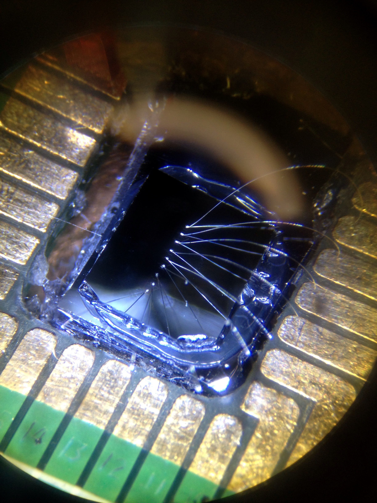

<<<<<<< HEAD
I am a theoretical physicist with interests in quantum information, quantum foundations, quantum thermodynamics, and quantum computing. My current research is on how the structure of quantum theory is displayed when it merges with thermodynamics. I am also interested in how quasiprobability representations of quantum theory enable the identification of nonclassical behavior and quantum resources. Previously, I have examined epistemic interpretations of quantum theory from a quasiprobability perspective. Preprints of my papers can be found https://arxiv.org/search/?searchtype=author&query=Braasch%2C+W+F
=======
I am a theoretical physicist with interests in quantum information, quantum foundations, and quantum computing. My research focus is on distinguishing between systems behaving classically and those behaving quantum mechanically. The boundary between the classical and quantum worlds has been of intrinsic interest since the advent of quantum theory as highlighted in Schrödinger’s famous feline gedanken experiment. However, making this distinction precise has taken on new significance in the effort to realize technologies leveraging quantum mechanical principles to outperform classical competitors. My approach to this research problem is centered around phase-space formulations of quantum mechanics.
>>>>>>> d07f1f48b7532e46f479b0a1afd69aa7f4f21ac8
=======
W. F. Braasch Jr., O. D. Friedman, A. J. Rimberg, and M. P. Blencowe
"Wigner current for open quantum systems."
Physical Review A. 2019. 100 (1)
https://doi.org/10.1103/PhysRevA.100.012124
>>>>>>> d07f1f48b7532e46f479b0a1afd69aa7f4f21ac8